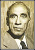

| PATRAS BUKHARI is the pen name of one of Urdu’s foremost humorist writers, Syed Ahmad Shah. Patras ke Mazaameen (1927?), a collection of his humorous pieces, became an instant masterpiece and is still read avidly. He served as Pakistan’s representative in the United Nations and later as Under-Secretary General in the same organization. |
 |